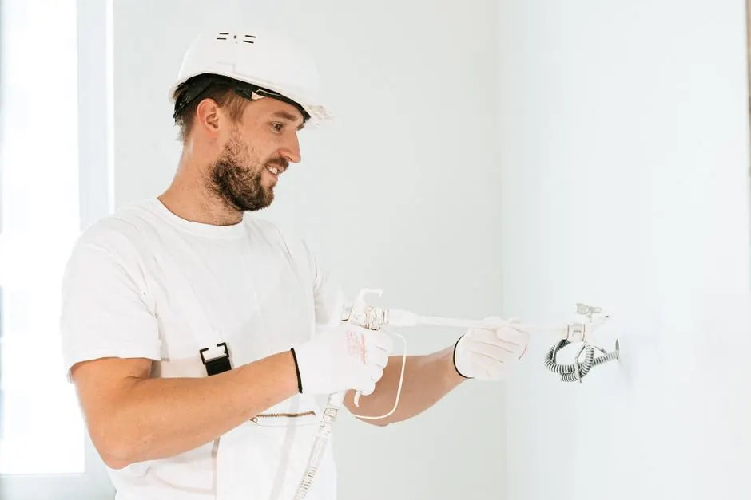
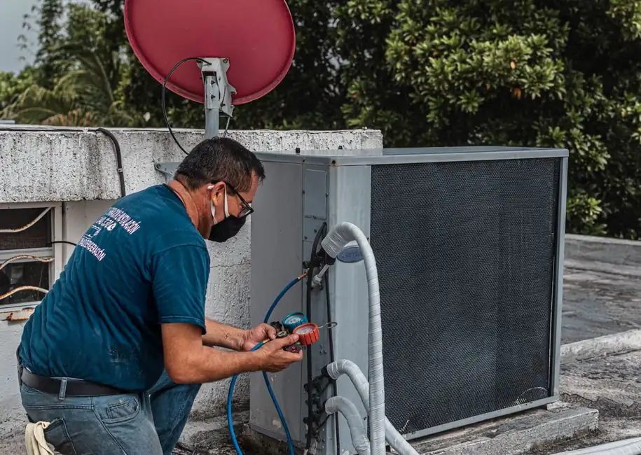

Expert solutions for your gas dryer issues
Gas Dryer Repair Sarasota FL
Gas Dryer Repair Sarasota FL is vital for homeowners facing appliance troubles. Our Gas Dryer Services in Sarasota ensure your dryer runs efficiently, saving you time and energy.
Live dispatcherUpfront optionsBacked workmanship
What's included
What Our Gas Dryer Repair Includes
Our Gas Dryer Repair services cover a comprehensive range of issues, ensuring your appliance runs efficiently after repairs. We focus on both the repair and maintenance aspects.
Diagnostic Assessment
We perform a thorough diagnostic to identify issues accurately, ensuring no problems are overlooked.
Replacement Parts
If necessary, we use high-quality replacement parts, such as heating elements and thermostats, to ensure long-lasting repairs.
Safety Checks
We conduct safety checks to ensure your gas dryer is operating safely, preventing potential hazards.
Post-Repair Testing
After repairs, we test your dryer to confirm it operates correctly and efficiently, ensuring your satisfaction.
Service overview
Understanding Gas Dryer Repair Sarasota FL
Gas Dryer Repair Sarasota FL involves diagnosing and fixing issues that prevent your gas dryer from functioning properly. Common problems include the dryer not heating, starting issues, and unusual noises. Our team utilizes specialized tools and techniques to restore your appliance's performance effectively.
Local Sarasota customers often need gas dryer repair due to the humid climate, which can affect appliance efficiency. Gas dryers are efficient, but when they malfunction, they can lead to increased energy bills and inconvenience. Our affordable Gas Dryer Services Sarasota are designed to address these issues promptly, including same-day Gas Dryer Repair in Sarasota.

How we workWe verify the cause, compare realistic options, and confirm the repair before we leave.
The service timeline
What to Expect During Gas Dryer Repair
The process flexes to the condition, but these checkpoints keep decisions clear.
Initial Consultation
Our technician will assess your gas dryer's issues during an initial consultation. This step usually takes about 30 minutes, allowing us to understand the problem fully.
Diagnostic Testing
We use advanced tools like multimeters to diagnose issues accurately. This step can take an additional 30-45 minutes, ensuring we identify all underlying problems.
Repair Plan Proposal
After diagnostics, we provide a clear repair plan, including costs and timelines. This transparency ensures you understand the necessary work before we begin.
Execution of Repairs
Our skilled technicians will perform the repairs using quality parts, such as heating elements and thermostats. This process typically takes 1-2 hours, depending on the complexity.
Final Testing and Cleanup
After repairs, we conduct thorough testing to ensure your gas dryer operates correctly. We also clean up the work area, leaving your home tidy.
Tools & methods
Tools and Methods Used in Gas Dryer Repair
Purpose-built equipment, used by trained technicians, so the job is done accurately the first time.
Multimeter
Used for diagnosing electrical issues in your gas dryer.
Screwdriver
Essential for disassembling components for inspection and repair.
Pliers
Used for gripping and manipulating small parts during repairs.
Wrench
Necessary for loosening and tightening connections.
Use cases
When to Use Gas Dryer Repair Services
These examples show how the service framework adapts rather than forcing every call through one repair.

Dryer Not Starting
The dryer would not start, disrupting the homeowner's laundry schedule. → Post-repair, the dryer started reliably, allowing for timely laundry completion.
Loud Noises During Operation
The dryer emitted loud grinding noises, indicating potential mechanical failure. → We replaced worn parts, and now the dryer operates quietly and efficiently.
Problems we solve
Problems Solved by Gas Dryer Repair Sarasota FL
Our Gas Dryer Repair services address various common issues faced by Sarasota residents, ensuring efficient and safe operation.
Dryer not heating properly
Our technicians will diagnose and replace faulty heating elements, restoring your dryer's efficiency.
Dryer not starting at all
We check electrical connections and replace defective components to get your dryer running again.
Loud noises during operation
Our experts identify the source of the noise, often related to worn belts or motors, and perform necessary repairs.
Pricing process
Pricing for Gas Dryer Repair Services
Upfront Quotes • No Hidden Fees
Type of Repair Needed
Simple repairs may cost less, while complex issues requiring multiple parts can increase the price.
Parts Replacement
The need for new parts, such as heating elements or thermostats, will add to the total cost.
Emergency Service Requests
Requests for same-day or emergency services may incur additional charges.

What are common issues with gas dryers in Sarasota?
Common issues include dryers not heating, starting problems, and strange noises. These issues can often be resolved with professional Gas Dryer Repair Sarasota FL services.
How can I get my gas dryer repaired in Sarasota?
To get your gas dryer repaired in Sarasota, contact us for a consultation. We offer same-day service to address your needs quickly.
What is the cost of gas dryer repair in Sarasota?
The cost of gas dryer repair in Sarasota depends on the specific safety and mechanical components needed, such as gas valve solenoids, igniters, flame sensors, or thermostats. We provide upfront, transparent quotes before any repair work begins with no hidden fees.
How long does gas dryer repair take in Sarasota?
Most gas dryer repairs in Sarasota take between 1 to 2 hours, depending on the complexity of the issue. We prioritize efficiency to minimize downtime.
Related services
Related Services

Dryer Not Heating Repair
If your gas dryer isn't heating, our specialized Dryer Not Heating Repair services can restore functionality quickly, ensuring your laundry gets dry.
Electric Dryer Repair
For those with electric models, our Electric Dryer Repair services address similar issues, ensuring all types of dryers run efficiently.
Dryer Belt Replacement
A worn-out dryer belt can cause operational issues. Our Dryer Belt Replacement services ensure your dryer functions smoothly once again.Ready when you are
Get Expert Gas Dryer Repair Sarasota FL Today
Don't let a malfunctioning dryer disrupt your routine. Contact us for reliable gas dryer repair services and enjoy peace of mind.

Talk with the local team
Request Gas Dryer Repair
We're here to help! Reach out to us for any dryer repair needs. Our team is available during business hours to assist you.
Instant Phone Dispatch
Call Directly for Immediate Service
No waiting for email replies or form submissions. Speak directly with our local Sarasota dispatch team to confirm technician availability and same-day arrival times.
- Same-Day Arrival: Vans stocked with common dryer parts
- Upfront Quotes: Clear diagnostic estimates before work
- All Brands Serviced: Electric & gas dryer certified
- Local Dispatch: Originating from 3856 Yellowstone Cir